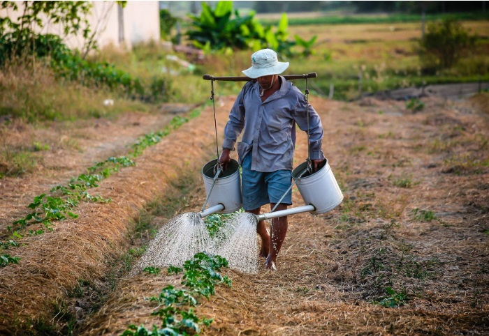

More About Ghazipur-
- Location of Ghazipur-

Ghazipur district forms the eastern part of the Varanasi Division . It lies to the east and north of the Jaunpur and Varansai district
respectively between the parallels of 25° 19′ and 25° 54′ north latitude and 83° 4′ and 83° 58′ east longitude. This location is 67.50 Mt.
above the sea level. The length of district from East to West is 90 Km. and Width from North to South is 64 Km. The River Ganges from one
side and Karmnasa from other side divided it from Bihar State. It is bounded on Ballia and Bihar State in east, Jaunpur, Varansi and Azamgarh
in west , Mau and Ballia in north and the Chandauli in south .The boundaries are generally conventional though at places they are marked by natural feature.
Occupation of people-
Opium factory, Cooperative spinning mill, Bahadurganj, Sugar mil and Wine factory at Nandganj. Then comes the place of a
cottage industry. The carpet, plastic toys, bamboo articles washing soap, steel trunk industry, Jante Dhoti Udyog and Electronics work,Handloom worketc.
People around 75% are dependent on farming . Only 25% of people are doing different work accept farming .